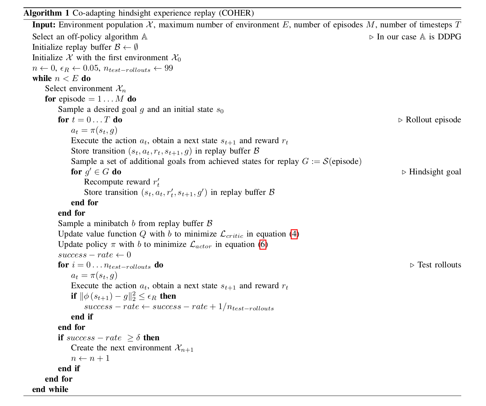

Sections
- Abstract
- Methodology
- Experiment
Abstract
Multi-goal reinforcement learning (RL) problems with sparse rewards are challenging task. Hindsight experience
replay (HER) learns from failures by replacing the achieved state of failed experiences with desired goal. If
desired goals are far away from the initial states, HER cannot explore efficiently.
To deal with that efficiency problem, curriculum-based RL approaches decompose complex tasks into sequences of
gradually more difficult tasks by relying on some heuristics and guide the agent to explore the environment more
efficiently. What if an algorithm generates its own curricula in an open-ended way rather than relying on heuristic
methods? The term
open-ended means to create novel and increasingly complex tasks without bound. In this
paper, we propose an extension of HER called co-evolutionary hindsight experience replay (COHER) inspired by Paired
Open-Ended Trailblazer (POET). The generated task and agent are coupled to optimize the behavior of the agent within
the task-agent pair. After reaching a predefined success rate, the next challenging task is generated and the agent
leverages the skills acquired from the prior task to solve the more challenging task. COHER has been evaluated on
various sparse reward benchmark tasks and compared with a curriculum RL "Hindsight Goal Generation" (HGG) and
vanilla-HER. The results show that COHER consistently outperforms the state-of-the-art methods and can avoid
obstacles without giving the algorithm explicit information about their position. Lastly, we deploy policies from
the training results to the real Franka robot for Sim2Real. We observe that Franka robot with the final policy of
our method can achieve the task by avoiding obstacles, whereas the other policies hit the obstacles.
Methodology
In this paper, we are working on robot manipulation tasks in an open-ended process within single run. We pair each
environment $\mathcal{X}$ (e.g different number of obstacles) with an agent $\mathcal{Y}$ (e.g neural network) and
optimize the behaviour of agents within environment-agent pair until it reaches the predefined success rate. After
satisfying the success rate, a bit harder new environment $\mathcal{X'}$ (e.g more obstacles than previous one) is
generated. Correspondingly, the algorithm continuously creates a new challenging environment originating from parent
environment. These new challenges in the environments are en coded by the number, dimension, and position of the
obstacles and the algorithm mutates and increase some of the parameters to create new challenging environment.
The agent seeks to solve newly generated environments by utilizing its existing skills, which are acquired from
previous environments. In this way, the agent transfers and adapts its existing behavior to the new environment.
New generated environment are not added to the current population in POET if they are too hard and too easy for the
current population. On the contrary, testing an environment in our case whether or not it is
too hard or too easy incurs much cost due to complexity of task we have to ensure that agent attains the predefined
success rate in the current environment before solving the next one.
Algorithm 1 describes our method briefly. We start with a very simple environment and train it using HER
framework. When performance is greater than or equal to the predefined success rate $\delta$, the next challenging
environment is created and agent tries to learn the new environment with its current skills.

|
Experiment
We conduct experiments on the MuJoCo simulation provided by OpenAI Gym and used as a standard benchmark for
Multi-goal RL using the 7-DOF Fetch Robotic Manipulator. Two standard manipulation
tasks such as push and pickandplace are chosen.
The state is a vector consisting of the position, orientation, linear velocity, and angular velocity of all robot
joints as well as the position of the cube and target object (except the obstacles). It is assumed that the task is
accomplished if object reaches the goal within the distance set by a threshold (Eq.\ref{eq:reward_function}) and
receives a non-negative reward $0$.
We compare the performance of our framework against vanilla HER and HGG. For all experiments, we used Energy-based
replay buffer prioritization. When current environment $\mathcal{X}$ performance reaches
predefined success rate $\delta$, a bit harder next environment $\mathcal{X'}$ is generated and agent continue to
accomplish the new one with its learned model.
PickAndPlace(FrankaPickAndPlace-v1):
A pick-and-place task with different environments is shown in the Fig.\ref{fig:pickandplace_env_evolution}. The
objective is to grasp the object and bring it to the target position. The object is shown as a black box, and its
initial position is sampled uniformly from the yellow area. The target is the red dot, which is sampled uniformly
from the blue region, and the obstacles are colored in magenta. The task’s difficulty is gradually increased by
adding fixed blocks to the different locations on the table, and four different environments are generated in total.
In the first task shown in the Fig.\ref{fig:pickandplace_1}, the robot learns how to pick up the object and place it
on the red dot. In the second shown in Fig.\ref{fig:pickandplace_2}, a 0.2m-width, 0.02m-depth, and 0.5m-height
obstacle is placed on the other side of the robot on the table. In the third shown in Fig.\ref{fig:pickandplace_3},
another obstacle with 0.3m width, 0.02m depth, and 0.3m height is placed. In the last shown in
Fig.\ref{fig:pickandplace_4}, an obstacle with 0.2m width, 0.02m depth, and 0.9m height is placed in front of the
target sampled area.
Pushing(FetchPush-v1):
A cube (black box) and target (red dot) are sampled uniformly from the yellow and blue areas, respectively. The
objective is to push the cube into the target position with a clamped gripper. The task's difficulty is gradually
increased by adding fixed obstacles to the different locations on the table, and four different environments are
generated in total, as shown in the Fig.\ref{fig:push_env_evolution}. In the first task Fig.\ref{fig:push_1}, the
robot learns how to push the object to the target point. In the second task Fig.\ref{fig:push_2}, the robot needs to
adapt its learned policy from the previous task to avoid the obstacle. In the third task Fig.\ref{fig:push_3}, there
is only a 10cm gap, and robots should push the object through this gap. Another obstacle is placed in the middle of
the table in the fourth task in Fig.\ref{fig:push_4}, which the robot must avoid in order to reach the target
position.
We have released the PyTorch based implementation and environment on the
Github page. Try our code!
{kind=link}